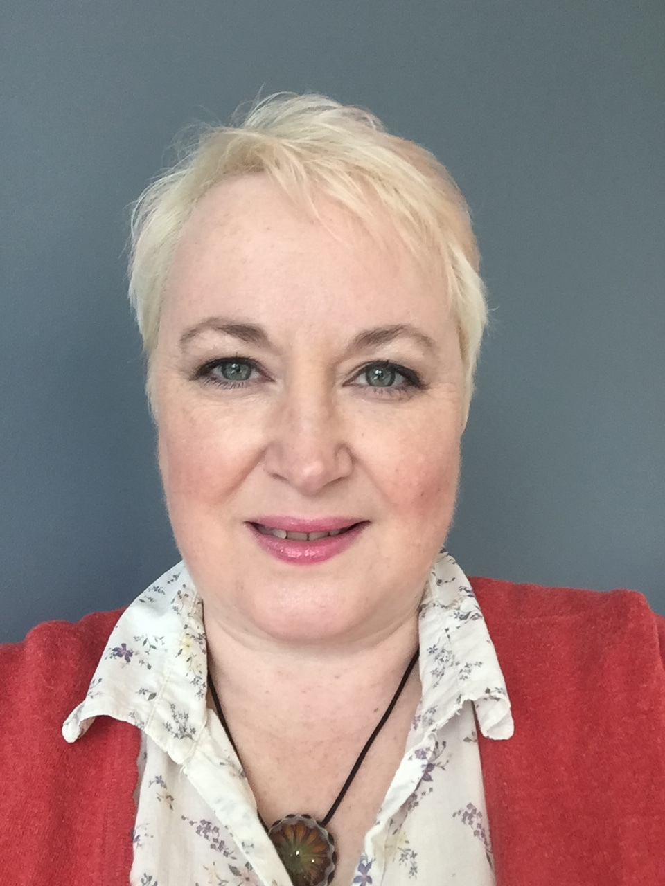

Helen Lisowski
Helen Lisowski trains and mentors talented people in the Software Development Industry to build great habits. Using psychology & behavioural science she helps people work to their optimum, at the same time to deliver more value for their organisation. She has been involved in agile for well over a decade from International Corporations to startups, and everything in between.
Currently working at NewVoiceMedia Helen has helped transform the agile process from yearly releases to weekly releases. She has been presenting, running workshops and writing for many years now. She blogs at FluidWorking.com and you can find her on Twitter at @helenlisowski.
Helen claims her life is filled with variations on the same question about why we humans do what we do. She has an obsession with afternoon tea, so if you bump into her, say hi and join her for a brew.
Website: http://https://fluidworking.com
Twitter: @@helenlisowski